Nyzo version 478 (commit on GitHub) introduces the Nyzo sentinel.
Instructions for setting up the sentinel are included at the end of these notes. We do recommend reading the entirety of the notes, however, as they provide important insight into how the sentinel works.
This commit contains one minor change to the verifier logic, but you do not need to update your verifiers to use the sentinel. The sentinel can be used to manage any version of the Nyzo verifier.
The one verifier change removes the penalty for inactive verifiers, which will be replaced with a comprehensive verifier performance metric in an upcoming release. The previous penalty code has been commented out, and it will be removed when the new performance metric and penalty are added.
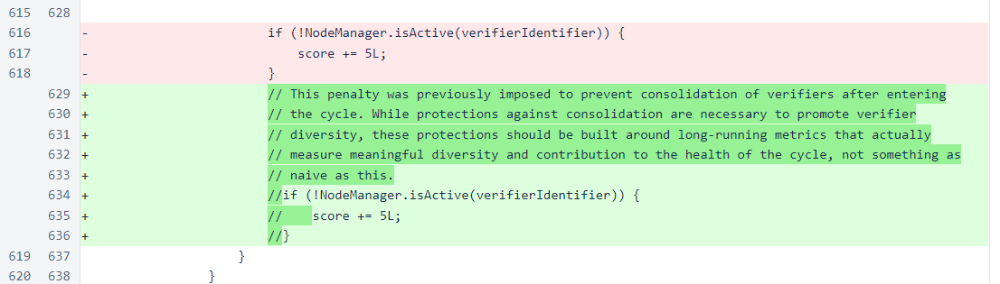While the sentinel is included in the verifier codebase, it is a separate program. The sentinel should not be run on an instance that is running the verifier. It should be run on a dedicated instance. Running the sentinel on an instance that is running the verifier is untested and will likely prevent the verifier and/or sentinel from functioning properly.
Verifiers functioning alone are vulnerable to removal from the cycle due to temporary hardware and network issues. If an in-cycle verifier does not produce its block at the expected time, the verifier is skipped after and the next verifier's block is incorporated into the blockchain. If this happens, the skipped verifier must wait to join the cycle again as a new verifier. At the time of the release of this version, the expected average wait time for new verifiers is already several months. The purpose of the sentinel is to provide improve stability of the cycle by producing blocks for in-cycle verifiers that are unable to produce blocks due to temporary issues.
The sentinel is a simple loop that relies on absolute trust of one or more verifiers to track the blockchain. These verifiers need not all be in-cycle verifiers. This is important, as many users who wish to use the sentinel may have only one in-cycle verifier, and the sentinel will not function properly if at least one of the verifiers it manages is not functioning properly. So, if you have only one in-cycle verifier, you should start a second verifier for the sentinel to manage.
The sentinel first loads the managed verifiers.
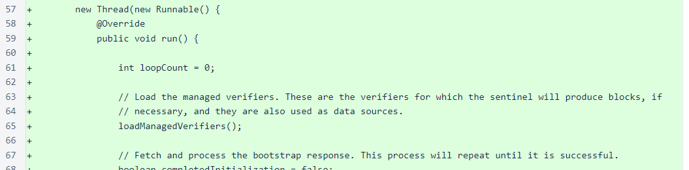The managed verifiers are stored in a text file with the following fields:
The file is read, ManagedVerifier objects are created, and the objects are stored in both a list for iteration by index and in a map for lookup by identifier.
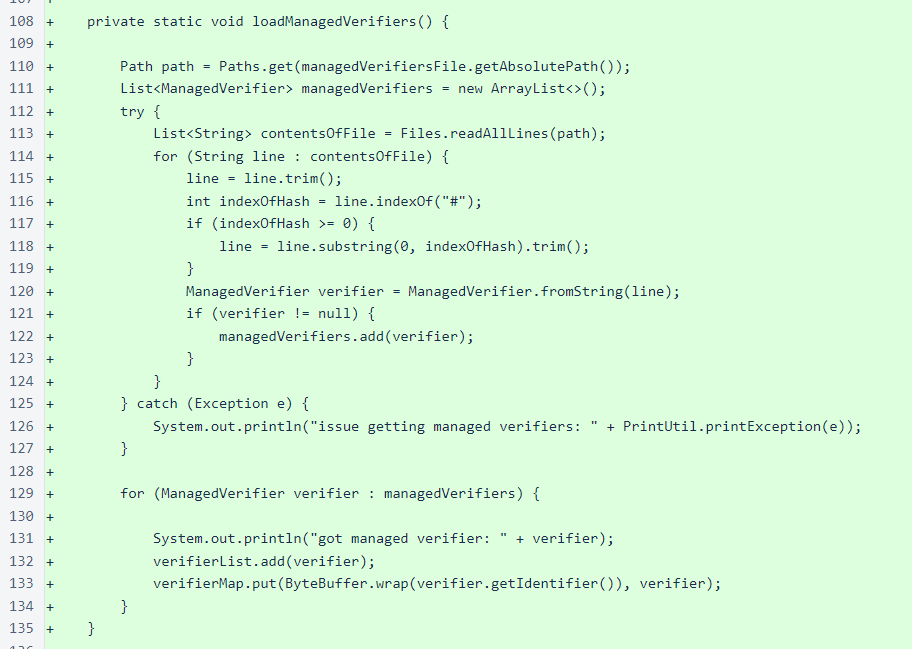The verifiers are specified one per line, and the fields are separated by colons. A typical file might look like this.

The next step is fetching a bootstrap response to determine the current state of the blockchain.
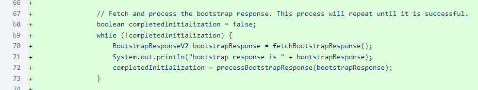The bootstrap response is fetched from one of the managed verifiers. The sentinel keeps querying the managed verifiers in a circular queue until a bootstrap response is obtained.
Again, unlike the verifier, the sentinel fully trusts the verifiers it is managing. Even in the verifier initialization process, where the verifiers in the trusted_entry_points file are queried to determine the state of the blockchain, a democratic process is used to eliminate the need to trust any one of the entry points fully. In the following method, you can see that the bootstrap response is obtained from one and only one verifier, and the sentinel trusts that response to be honest and correct.
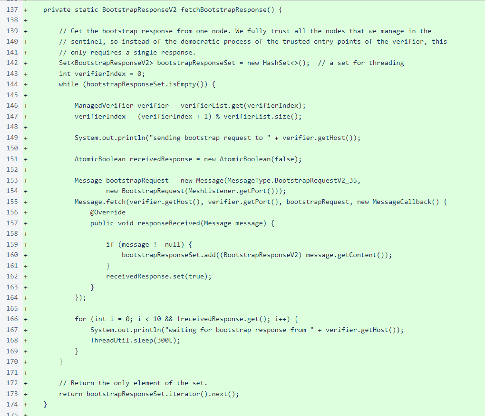The next step you see in the while loop above is processing of the bootstrap response. In order to properly score blocks, which is necessary for determining when to transmit blocks, we need about four cycles of the blockchain. So that the verifier can start producing blocks quickly, instead of waiting for four cycles of blocks to be produced, we start at a height four cycles back from the frozen edge. Before fetching a block at this height, though, we check to see if we already have the block or a higher block frozen locally. If a higher block is already frozen locally, we know that the full chain section back to the cutoff height is also available, as this same initialization process is completed every time the sentinel starts.
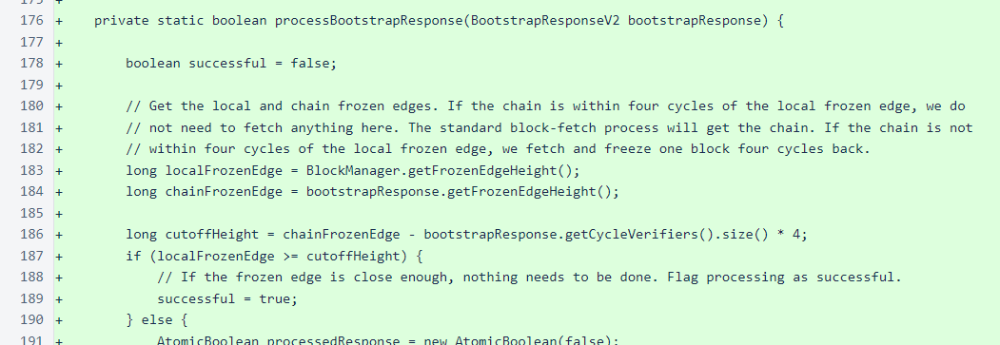If a block needs to be fetched, the method attempts to fetch that block until it is obtained or each managed verifier is queried once. If it is not obtained, this method returns a false value, which causes the while loop to iterate again and fetch a new bootstrap response. The method does not attempt to keep fetching the same block endlessly, as there is a small chance that the block has fallen behind the retention edge.
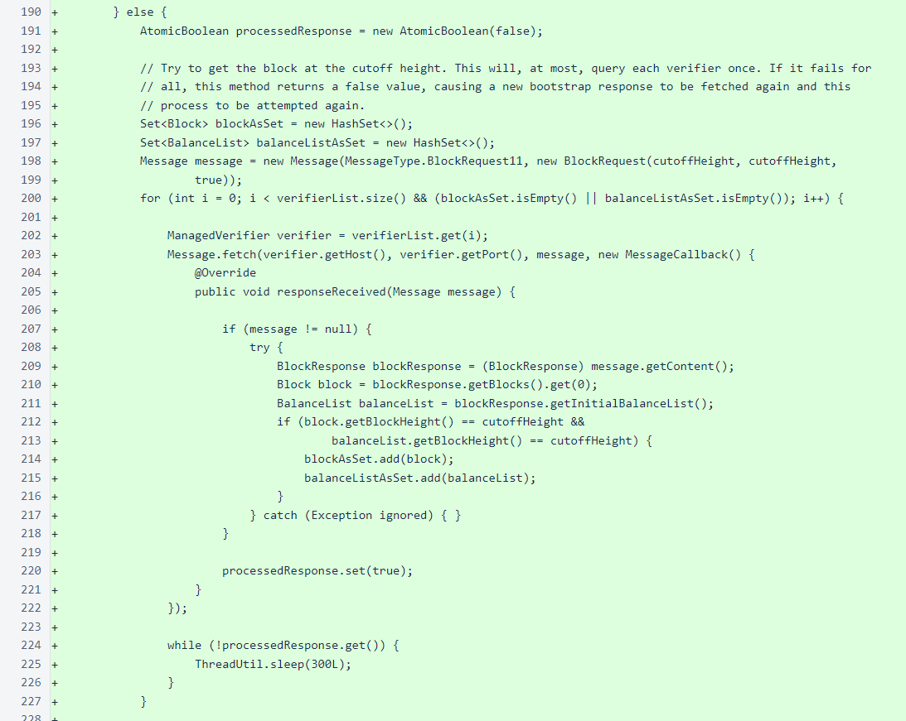After the bootstrap response is processed, the sentinel enters the main application loop. The loop consists of three tasks:
The mesh is fetched from one verifier at a time in a circular order. The mesh from each verifier is stored in a map so that the mesh from each verifier replaces the mesh fetched from the same verifier the last time it was queried.
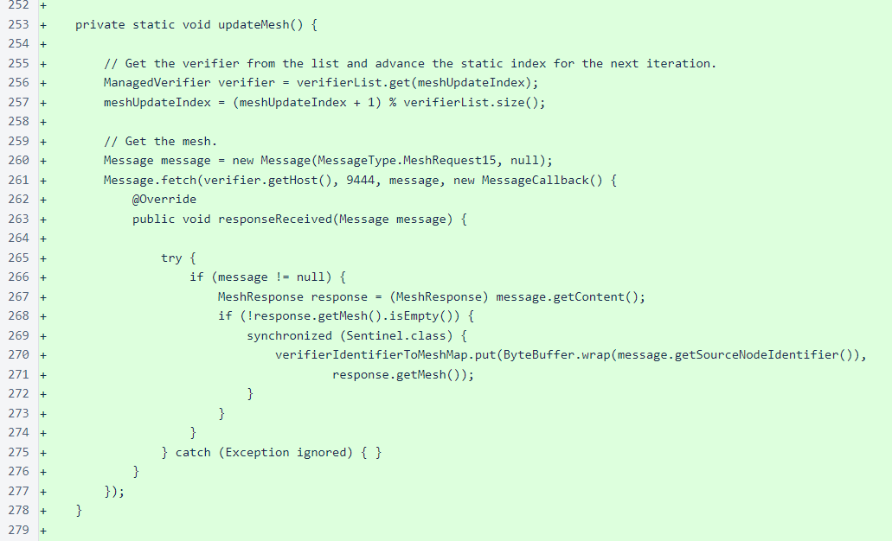The blocks are also fetched from one verifier at a time in a circular order. When in “fast-fetch” (catch-up) mode, ten blocks are fetched at a time. When tracking the frozen edge, a single block is fetched with each request.
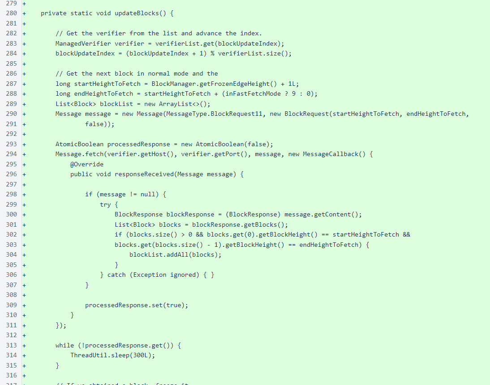When blocks are obtained, they are immediately frozen. This is another example of the complete trust that the sentinel places in the verifiers it manages.
Multiple consecutive successful block fetches, combined with a minimum distance between the local frozen edge and the open edge, activate fast-fetch mode. Multiple consecutive failures deactivate fast-fetch mode.
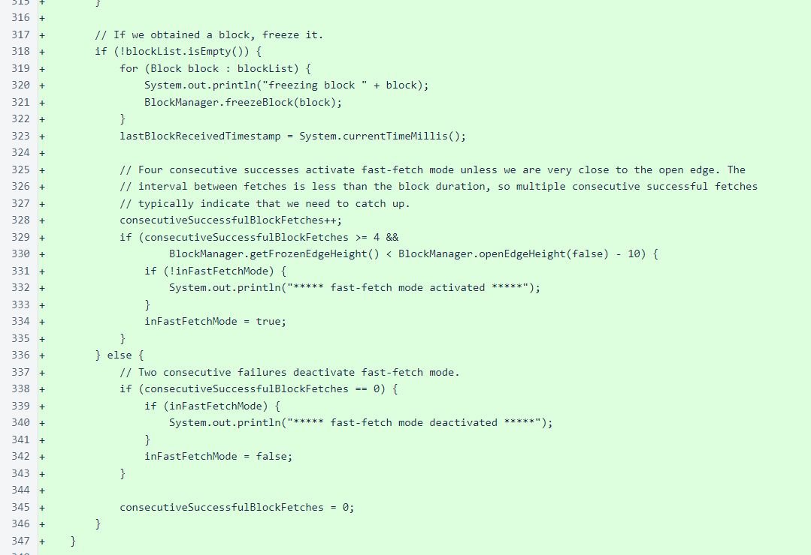Finally, the main loop creates and transmits blocks if it calculates that one of its managed verifiers may be in danger of being removed from the cycle. A verifier has approximately 80 seconds in which to produce a block before being removed from the cycle, so the sentinel does not even create and score blocks until it has not received a block for at least 30 seconds. The 30-second delay allows the sentinel to transmit blocks long before managed verifiers would truly be in danger of removal while also avoiding block creation entirely for the vast majority of heights.
If more than 30 seconds have passed since the last frozen block was received, the set of blocks is cleared if it is not for the height that is currently being processed, and new blocks are made if necessary.

Scores are calculated for the blocks, and a block is transmitted if any of the block scores have a minimum vote timestamp in the past. You may recall that the verifier transmits blocks in anticipation of the minimum vote timestamp (10 seconds before) to keep the blockchain processing as quickly as possible. The sentinel, though, is intended as a fallback in exceptional cases, so its behavior always leans in favor of conservative efficiency, and it waits longer to transmit blocks relative to the minimum vote timestamp.
The block message is signed by the block verifier, as new-block messages will not be accepted if they are not signed by verifiers that are in the cycle or at the top of the vote tally.
While the sentinel may manage many verifiers, it never needs to transmit more than one block at any height. By transmitting the lowest-scored block at a height, the sentinel protects not only the verifier of that block, but also all verifiers of lower-scored blocks, from removal from the cycle.
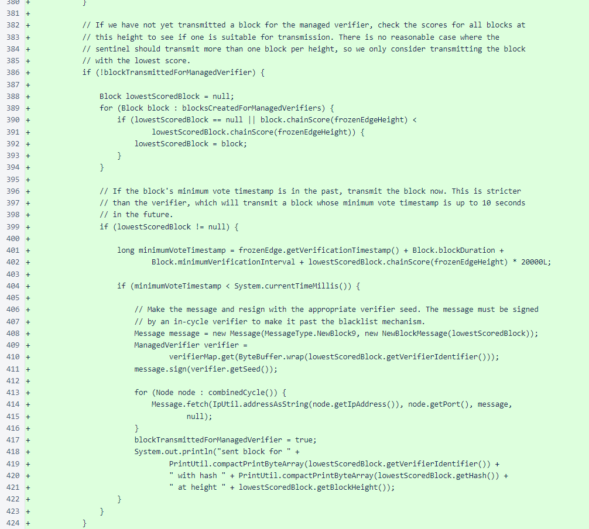Installation of the sentinel is similar to installation of the verifier. However, we do not recommend running the sentinel and the verifier on the same instance. This is not tested and will likely cause either the sentinel or the verifier to malfunction.
To start a sentinel, we recommend creating a t3.micro AWS instance with the latest Ubuntu LTS version and an 8GB EBS volume. Open the SSH port to your IP address so you can access the instance. Then, when you have SSHed into the instance, run the following commands (enter each command separately):
sudo apt update
sudo apt install haveged -y
sudo apt install openjdk-8-jdk -y
sudo apt install supervisor -y
git clone https://github.com/n-y-z-o/nyzoVerifier.git
cd nyzoVerifier
./gradlew build
sudo mkdir -p /var/lib/nyzo/production
sudo cp nyzoSentinel.conf /etc/supervisor/conf.d/
Now, you need to create the file that tells the sentinel which verifiers to manage. This file needs to be created at /var/lib/nyzo/production/managed_verifiers. Use your favorite text editor to create this file on the instance, or create the file on your computer and copy it to your instance using a tool like scp. Each line in the file should contain the following information for one managed verifier, separated by colons:
If the sentinel transaction flag is included and the value is “y” or “Y”, a µ1 transaction will be added to any block produced for that verifier. This transaction will have “block produced by Nyzo sentinel” in the sender-data field. This transaction is entirely optional. This option was added mostly for entertainment value; it is not intended to be a penalty or fee. It is optional, and the default behavior of the sentinel is omission of this transaction.
The following shows how the managed_verifiers file might look:
After you have created this file, start the sentinel with the following command:
sudo supervisorctl reload
To ensure that your verifiers have loaded properly, run the following command:
more /var/log/nyzo-sentinel-stdout.log | grep 'ManagedVerifier'
The output should look something like this, with one line for each verifier you specified in the managed_verifiers file:
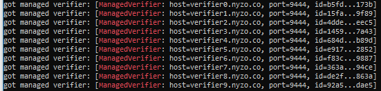To ensure that the sentinel is tracking the blockchain, run the following command:
tail /var/log/nyzo-sentinel-stdout.log -n 30 | grep 'freezing block'
A later version of the sentinel displays “froze block” instead, so the command for newer versions of the sentinel is:
tail /var/log/nyzo-sentinel-stdout.log -n 30 | grep 'froze block'
The output should look something like this:
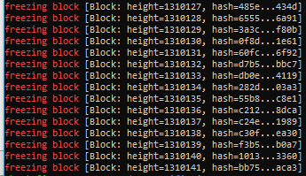If you run this command several times, you should see the numbers increasing. Within about 10 minutes, depending on the network performance of your sentinel and the verifiers it manages, the block height should be very close to the frozen edge height displayed on the Nyzo mesh page.